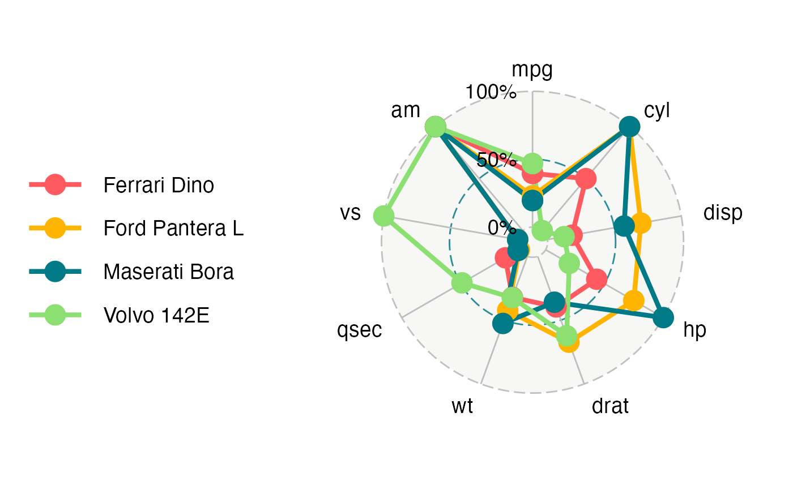

R/functions.R
ggradar.RdDiagrammes en radar avancés pour ggplot2 (Enhanced Radar Plots for ggplot2)
ggradar( plot.data, base.size = 15, font.radar = "sans", values.radar = c("0%", "50%", "100%"), axis.labels = colnames(plot.data)[-1], grid.min = 0, grid.mid = 0.5, grid.max = 1, centre.y = grid.min - ((1/9) * (grid.max - grid.min)), plot.extent.x.sf = 1, plot.extent.y.sf = 1.2, x.centre.range = 0.02 * (grid.max - centre.y), label.centre.y = FALSE, grid.line.width = 0.5, gridline.min.linetype = "longdash", gridline.mid.linetype = "longdash", gridline.max.linetype = "longdash", gridline.min.colour = "grey", gridline.mid.colour = "#007A87", gridline.max.colour = "grey", grid.label.size = 6, gridline.label.offset = -0.1 * (grid.max - centre.y), label.gridline.min = TRUE, label.gridline.mid = TRUE, label.gridline.max = TRUE, axis.label.offset = 1.15, axis.label.size = 5, axis.line.colour = "grey", group.line.width = 1.5, group.point.size = 6, group.colours = NULL, background.circle.colour = "#D7D6D1", background.circle.transparency = 0.2, plot.legend = if (nrow(plot.data) > 1) TRUE else FALSE, legend.title = "", plot.title = "", legend.text.size = 14, legend.position = "left" )
| plot.data | dataframe comprising one row per group |
|---|---|
| base.size | text size |
| font.radar | text font family |
| values.radar | values to print at minimum, 'average', and maximum gridlines |
| axis.labels | names of axis labels if other than column names supplied via plot.data |
| grid.min | value at which mininum grid line is plotted |
| grid.mid | value at which 'average' grid line is plotted |
| grid.max | value at which maximum grid line is plotted |
| centre.y | value of y at centre of plot |
| plot.extent.x.sf | controls relative size of plot horizontally |
| plot.extent.y.sf | controls relative size of plot vertically |
| x.centre.range | controls axis label alignment |
| label.centre.y | whether value of y at centre of plot should be labelled |
| grid.line.width | width of gridline |
| gridline.min.linetype | line type of minimum gridline |
| gridline.mid.linetype | line type of 'average' gridline |
| gridline.max.linetype | line type of maximum gridline |
| gridline.min.colour | colour of minimum gridline |
| gridline.mid.colour | colour of 'average' gridline |
| gridline.max.colour | colour of maximum gridline |
| grid.label.size | text size of gridline label |
| gridline.label.offset | displacement to left/right of central vertical axis |
| label.gridline.min | whether or not to label the mininum gridline |
| label.gridline.mid | whether or not to label the 'mininum'average' gridline |
| label.gridline.max | whether or not to label the maximum gridline |
| axis.label.offset | vertical displacement of axis labels from maximum grid line, measured relative to circle diameter |
| axis.label.size | text size of axis label |
| axis.line.colour | colour of axis line |
| group.line.width | line width of group |
| group.point.size | point size of group |
| group.colours | colour of group |
| background.circle.colour | colour of background circle/radar |
| background.circle.transparency | transparency of background circle/radar |
| plot.legend | whether to include a plot legend |
| legend.title | title of legend |
| plot.title | title of radar plot |
| legend.text.size | text size in legend |
| legend.position | position of legend, valid values are "top", "right", "bottom", "left" |
Most of the code is from https://rstudio-pubs-static.s3.amazonaws.com/5795_e6e6411731bb4f1b9cc7eb49499c2082.html.
a ggplot object
library(dplyr) library(scales) library(tibble) mtcars_radar <- mtcars %>% as_tibble(rownames = "group") %>% mutate_at(vars(-group), rescale) %>% tail(4) %>% select(1:10) mtcars_radar#> # A tibble: 4 x 10 #> group mpg cyl disp hp drat wt qsec vs am #> <chr> <dbl> <dbl> <dbl> <dbl> <dbl> <dbl> <dbl> <dbl> <dbl> #> 1 Ford Pantera L 0.230 1 0.698 0.749 0.673 0.424 0 0 1 #> 2 Ferrari Dino 0.396 0.5 0.184 0.435 0.396 0.321 0.119 0 1 #> 3 Maserati Bora 0.196 1 0.573 1 0.359 0.526 0.0119 0 1 #> 4 Volvo 142E 0.468 0 0.124 0.201 0.622 0.324 0.488 1 1ggradar(mtcars_radar)